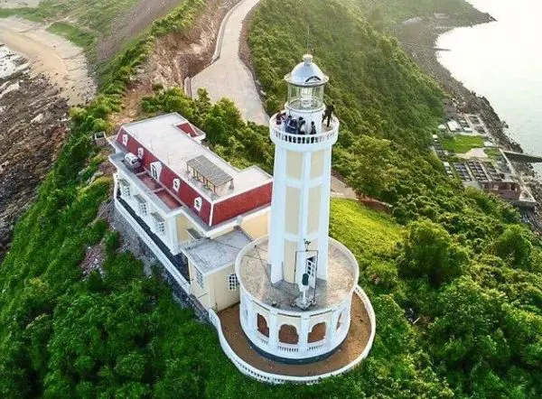
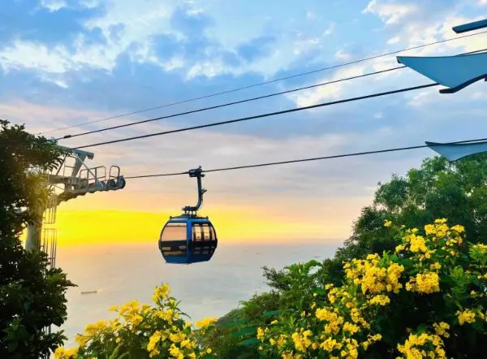
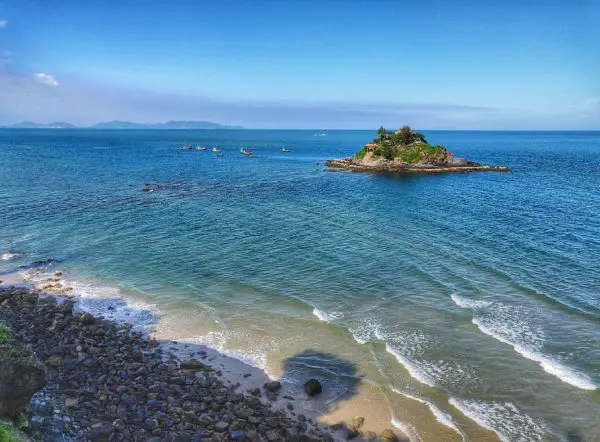
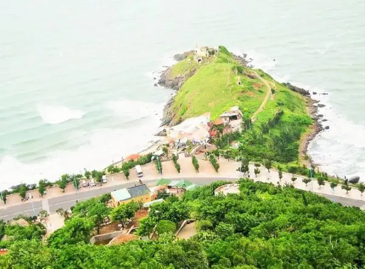
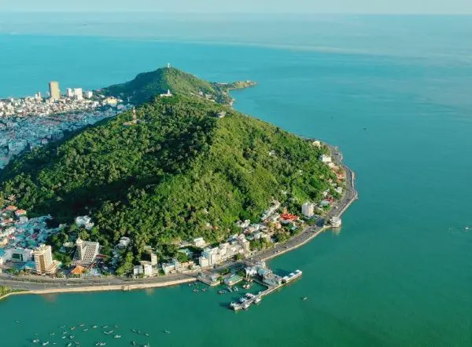

Bạch Dinh
Công trình kiến trúc cổ kính giữa không gian xanh mát.
Những điểm đến đáng khám phá tại Vũng Tàu.
Công trình kiến trúc cổ kính giữa không gian xanh mát.

Ngắm biển trời rộng mở và những vách đá tuyệt đẹp.

Điểm ngắm toàn cảnh thành phố biển từ trên cao.

Không gian vui chơi và thư giãn giữa núi non.

Hòn đảo nhỏ nổi bật giữa làn nước biển xanh.

Bãi biển mang vẻ đẹp yên bình, gần gũi thiên nhiên.

Khung cảnh biển hoang sơ đầy thơ mộng.

Khám phá không gian xanh và cảnh quan thành phố.